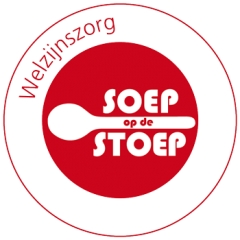
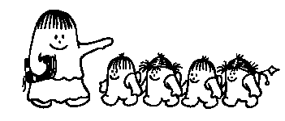
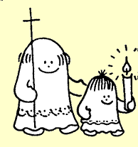
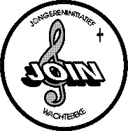
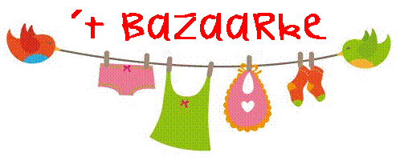
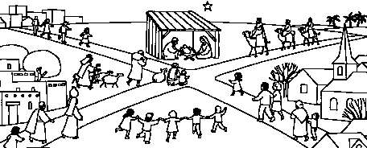

|  |
1. SOS - Soep op de Stoep op de markt
In de adventsperiode voert Welzijnszorg campagne voor de minstbedeelden in onze samenleving. Via de actie SOS - Soep op de Stoep zamelen we geld in om dit te steunen. We verkopen soep op de markt.
Waar en wanneer: zaterdag 13 december van 9.00u tot 11.00u. op de markt.
Verantwoordelijke catechist: Wouter Woestenborghs
Vrijwilliger: Lieve Van Wassenhover
Aantal deelnemers: minimum 3, maximum 7 |
|  |
2. Begeleiding kindernevendienst
Met een klein groepje van enkele vormelingen gaan we een kindernevendienst voorbereiden en begeleiden. Op de dag van de gezinsmis komen we ruim een uur voor aanvang bijeen. Samen met de catechist en de begeleiders van de nevendienst lezen we de teksten van de lezingen en het Evangelie van de zondag. Daarna bespreken we op welke manier we de boodschap van die zondag aan de kinderen overbrengen. Samen met de begeleiders ontvangen we de kinderen in de sacristie en begeleiden de kindernevendienst.
Waar en wanneer : Zondag 14 december van 9u30 tot 12u in de Sint-Catharinakerk
Verantwoordelijke catechist : Carla
Vrijwilliger : Kaat Dubois
Aantal deelnemers: minimum 2, maximum 4
|
|  |
3. Misdienaar in actie
Een ervaren misdienaar geeft een woordje uitleg bij de verschillende taken die een misdienaar tijdens de eucharistieviering moet uitoefenen. Uiteraard wordt er ook geoefend. Tijdens de viering kunnen de vormelingen dan echt voor de eerste keer de mis dienen.
Waar en wanneer : Zondag 14 dec van 9u30 tot 12u in de Sint-Catharinakerk
Verantwoordelijke catechist : Carla
Vrijwilliger: Tobit De Smet
Aantal deelnemers: minimum 1, maximum 3 |
|  |
4. Solidariteitskoor JOIN
Wie zangtalent heeft, is welkom in het solidariteitskoor. Eenmalig in het kader van dit engagement, of voor iets langere termijn. JOIN staat voor JOngeren-INitiatief en bestaat al meer dan 25 jaar. Maandelijks verzorgen zij de zondagsmis. De vormelingen wonen één van de repetities bij en zingen aansluitend in de zondagsmis.
Waar en wanneer: Zondag 14 december van 9u30 tot 12u. in de Sint-Catharinakerk
Verantwoordelijke catechist: Carla
Aantal deelnemers: minimum 2, maximum 6 |
|  |
5. 't Bazaarke
’t Bazaarke is een winkeltje met tweedehands kinderkledij. Het is bedoeld voor mensen die het niet zo breed hebben én voor mensen die tegen verspilling zijn. Veel kinderkledij is namelijk nog niet versleten wanneer de kinderen eruit gegroeid zijn en kan dus perfect nog eens gebruikt worden. We krijgen uitleg bij de werking en mogen zelf ook meehelpen met het sorteren, ophangen en verkopen van binnengebrachte kledij.
Waar en wanneer : Woensdag 3 december van 15u tot 17u, Godshuisstraat 11a (naast de lokalen van Chiro, KSA en ’t Meykevertje).
Verantwoordelijke catechist: Petra Mussche
Vrijwilliger: Monique De Visscher
Aantal deelnemers: minimum 2, maximum 5 |
|  |
6. Kerststallentocht: Herberg Sint-Catharina
Alle vormelingen van Wachtebeke Centrum zijn verwacht om deel te nemen aan de kerststallentocht. Maar zij die dit engagement kiezen worden ingeschakeld in de kerstherberg. Daar krijgen de wandelaars na afloop een warme tas chocomelk en een boterkoek. Daarvoor moet natuurlijk klaargezet, opgediend en afgewassen worden.
Waar en wanneer : Vrijdag 19 december van 15u30 tot 17u. Om 19u zijn we opnieuw paraat om mee te wandelen op de tocht en te helpen bij één van de kerststallen. Bij aankomst in de herberg helpen we bedienen en opruimen tot (ongeveer) 22u in de kerk.
Verantwoordelijke catechist : Wouter Woestenborgs
Vrijwilliger : Herman Dayaert
Aantal deelnemers: minimum 3, maximum 8
|
|
7. Wereldwinkel Wachtebeke
De wereldwinkel verkoopt producten aan een eerlijke prijs: de producenten in het Zuiden verdienen een eerlijk loon en er blijft geen winst hangen aan de vingers van grote multinationals. Het resultaat is er: geen dumpprijzen of uitbuiting van de boeren in het Zuiden, (h)eerlijke producten in onze boodschappenmand. De vormelingen zullen kennismaken met de werking van de wereldwinkel en een stukje meehelpen in de winkel.
Waar en wanneer: Op zaterdag 13 december van 10u tot 12u in de Wereldwinkel (Vierschaar - Dorp 54).
Verantwoordelijke catechist: Petra Mussche
Vrijwilliger: Mirthe Drieghe en Orphé Dejonghe
Aantal deelnemers: minimum 3, maximum 6
|
 |
8. Koffiestop Broederlijk Delen
Tijdens de vasten houden we in de kerk van Wachtebeke Centrum een koffiestop t.v.v. Broederlijk Delen. De vormelingen worden ingeschakeld bij het klaarzetten, bedienen en opruimen van de koffiestop. Voor dit werkje hebben we ook de hulp nodig van enkele volwassenen. Geïnteresseerde ouders zijn dus ook meer dan welkom !
Waar en wanneer: Zondag 15 maart van 10u tot 12u45 in de Catharinakerk
Verantwoordelijke catechist: Karolien Haeck of Petra Mussche
Vrijwilliger: Lieve Van Wassenhove
Aantal deelnemers: minimum 4, maximum 8 |
|
9. Rolstoelpoets
In het Moervaartheem wordt elke lente een grote schoonmaak georganiseerd van alle rolstoelen en rollators. Samen met enkele vrijwilligers helpen we bij het poetsen van dit rollend materiaal. Bij heel slecht weer sluiten we aan bij de animatie die georganiseerd wordt voor de bewoners.
Waar en wanneer: Woensdag 25 maart 13u30-16u,
Meersstraat 31
Verantwoordelijke catechist: Petra Mussche
Vrijwilliger: Chantal Vandeveire
Aantal deelnemers: minimum 2, maximum 8 |